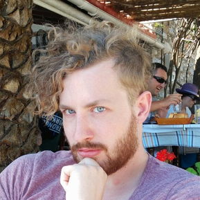

Cornelis de Mooij - Aerospace & Software Engineer
-
2014-2019 - Delft University of Technology
PhD Aerospace Engineering at Structural Integrity & Composites
-
2011-2014 - Delft University of Technology
MSc Aerospace Engineering at Aerospace Structures & Computational Mechanics / Novel Aerospace Materials
-
2008-2011 - Delft University of Technology
BSc Aerospace Engineering with a minor in physics
-
2002-2008 - Rijnlands Lyceum (Oegstgeest, NL)
TTO (Bilingual) Gymnasium with a specialization in nature and technology